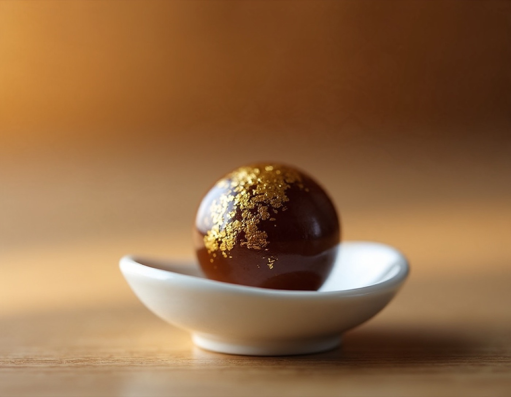

활력공진단
기운을 뿌리부터 채우는 처방
아무리 자도 피곤하고 몸이 무거울 때, 구파발경희한의원은 녹용을 비롯한 12가지 약재와 엔오를 더한 활력공진단을 처방합니다.
- 12가지 약재 + 엔오
- 5일 숙성 · 금박
- 1환 5.5g

피로가 잘 풀리지 않을 때
"아무리 자도 몸이 무겁고 집중이 잘 안 돼요."
요즘 많은 분들이 이렇게 말씀하십니다. 비타민이나 영양제를 챙기고, 커피로 버티고, 힘들 땐 링거를 맞기도 합니다. 하지만 하루 이틀 나아지는 듯하다가도 일을 하고 나면 금세 다시 지치는 느낌이 들기도 합니다.
구파발경희한의원은 잠깐의 보충보다 기운의 뿌리를 살피는 데 무게를 둡니다. 원기와 영양을 채워 주는 약재를 갖춘 활력공진단을 그래서 권해 드립니다.
약재는 원장과 가족이 먹는 것과 같은 기준으로 고릅니다.
12가지 약재와 엔오
원기와 영양을 보충하는 약재를 바탕으로 하고, 엔오(NO, 산화질소)를 더했습니다.
- 녹용
- 산수유
- 당귀
- 구기자
- 황기
- 향부자
- 육계
- 백출
- 건강
- 녹차
- 감국
- 박하
- 엔오(NO)
이렇게 만듭니다
- 1
12가지 약재와 엔오
녹용, 산수유, 당귀 등 12가지 약재에 엔오(NO)를 더해 준비합니다.
- 2
초미세분말
약재를 아주 곱게 갈아 입자를 고르게 합니다.
- 3
꿀 반죽
곱게 간 약재를 꿀로 반죽해 환을 빚습니다.
- 4
5일 숙성
5일간 숙성하는 과정을 거칩니다.
- 5
금박
금박을 입혀 완성합니다.
초미세분말로 갈아 5일간 숙성하는 방식으로 만듭니다.
이런 분께 상담을 권합니다
- 잠을 충분히 자도 피로가 잘 풀리지 않는 분
- 몸이 무겁고 집중이 잘 안 되는 분
- 영양제나 커피로 버티는 날이 많은 분
- 수험생, 직장인 등 체력 관리가 필요한 분
예민하고 스트레스가 많다면, 해울공진단
스트레스가 심하고 신경이 예민한 분은 활력공진단 대신 해울공진단이라는 대안이 있습니다.

해울공진단
활력공진단과 같은 방식으로 만들되, 기운을 순조롭게 하고 답답함을 풀어 주는 이기해울(理氣解鬱) 약재를 보강한 처방입니다.
구성
공진단 기본 처방(녹용 포함) + 향부자, 진피, 지각(용량 증대)
이런 분께 상담을 권합니다
- 스트레스가 많고 가슴이 답답한 느낌이 있는 분
- 신경이 예민하고 긴장을 많이 하는 분
- 긴장을 많이 하는 수험생
1환은 5.5g이며, 녹용은 뉴질랜드산 분골을 사용합니다.
사향 프리미엄 라인
활력공진단과 해울공진단에 사향을 더한 프리미엄 제품입니다. 사향활력공진단과 사향해울공진단 두 가지가 있으며, 선택 기준은 기존과 같습니다.
- 구성: 기존 활력·해울 처방 + 사향 + 엔오(NO) 소량
- 1환은 6g으로, 일반 활력·해울(5.5g)보다 큽니다.
비용 안내
처방의 구성과 복용 기간에 따라 달라져 진찰 후 안내해 드립니다. 전화(02-355-4517) 또는 네이버 예약으로 문의해 주세요.
※ 치료 효과와 경과는 개인에 따라 다를 수 있습니다. 이 페이지는 일반적인 안내이며, 실제 치료는 진찰 후 개인별로 안내드립니다.
궁금한 점은 편하게 문의해 주세요
진찰 후 상태에 맞는 방법을 설명드립니다.